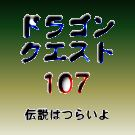

<HTML>
<BODY background="miraiB.GIF">
<HEAD><meta charset="UTF-8">
<TITLE>道具その5</TITLE><center>
<TABLE BORDER=0>
<TR ALIGN=CENTER>
<TD BGCOLOR=#ffffff><b><font size=6>未来道具</font><p><font size=5>ゲーム</font></b><p></TD></TABLE><p>



<b><font size=4>
未来でも、ゲームはまだまだ残ってるんだよ。もちろん体感ゲームは素晴しい進化を遂げたんだけど、実際に痛みとかまで体感できて、ショック死が増えすぎたから、紹介は自粛。そこで、もう日本の伝統にまでなってきた、「ドラク工シリーズ」を紹介するね。
<p>
ドラゴンクク工スト１０７<br><font size=3></b>＜-伝説はつらいよ-＞<b><p>
最新技術で作られた、ドラク工シリーズ待望の第１０７弾！<br>
仲間は最高、４万７千人まで連れていけます。アイテムは１億以上。通信をつかってのお友達との対戦もできます。選べる職業は７万種以上。勇者、戦士、魔法使いはもちろん、鍛冶屋から、八百屋、ダフ屋、弁護士、みどりのおばさん等、あらゆる職業を選べることができます。ストーリーはすべてあなたの動きによってかわります。（ランダム機能搭載）例えばあなたが、漁師になり、マグロを取りすぎると、生態ピラミッドが崩され、他の魚の大発生や、自然保護団体からの襲撃を受けたり、安くなったトロを一般人が食べれるようになり、回転寿司が大流行したりと、ひとつひとつの行動があなたと世界の運命をかえていきます。<br>
もちろん、勇者となり、世界を平和にすることもできます。あなたが何をするのも自由なのです。
</font>
<hr><a href="kaiwa.html">未来の会話を見る</a>
<hr><a href="index.html">S.F.に戻る</a><hr>
<a href="http://www.t3.rim.or.jp/~waru/mokuji.html">
目次へれっつらごー</a>
</font>
</center>
</BODY>
</HTML>